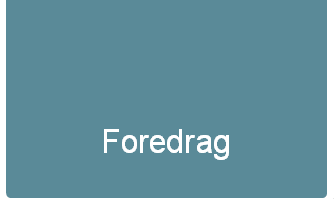

Jonthan Rhyne / @jdrhyne
Effektiv kommunikasjon i forhandlinger
Referate i USA kunder:- Begynne vennlig med kunder
- Finne noe du ønsker i kunder
=> få en bedre relasjon - Føler importante
- Ikke kritisere
- Snakker i vilkår med klienten
- Unngå argumenter
- La kunden føler at ideen er fra dem

Tema (VIKTIG): Weirding Way
Merk:- Satt forventninger: Varighet på det vil bli konkludere
- Forutsetninger: Spesifikasjoner
- Satt som prosess